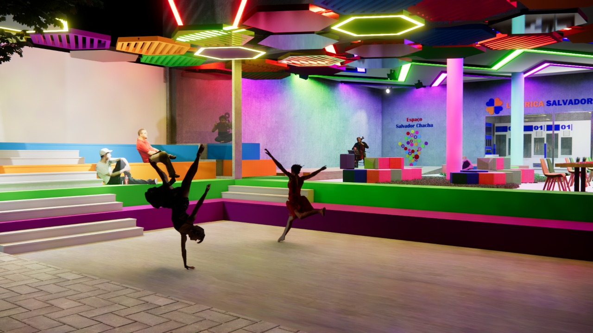
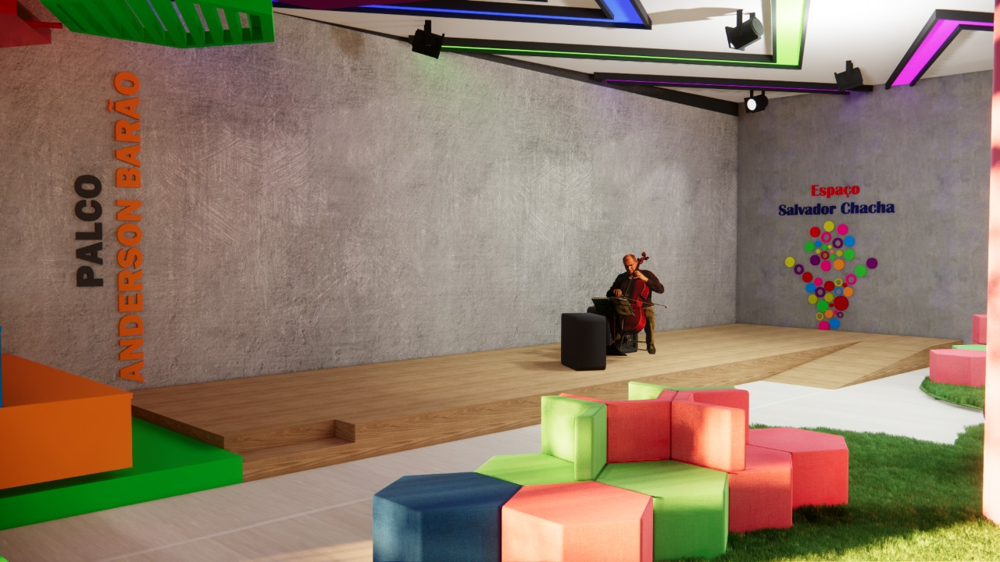
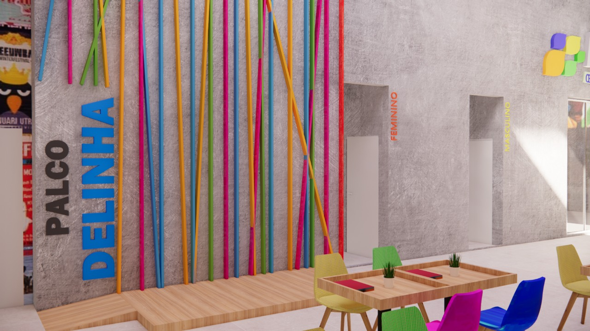
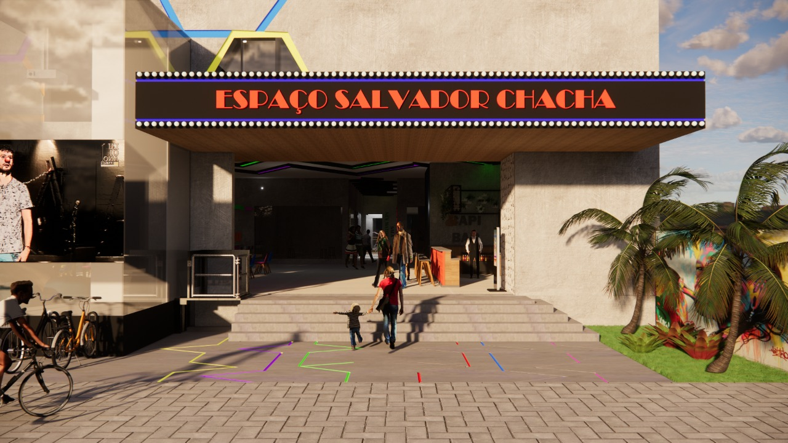
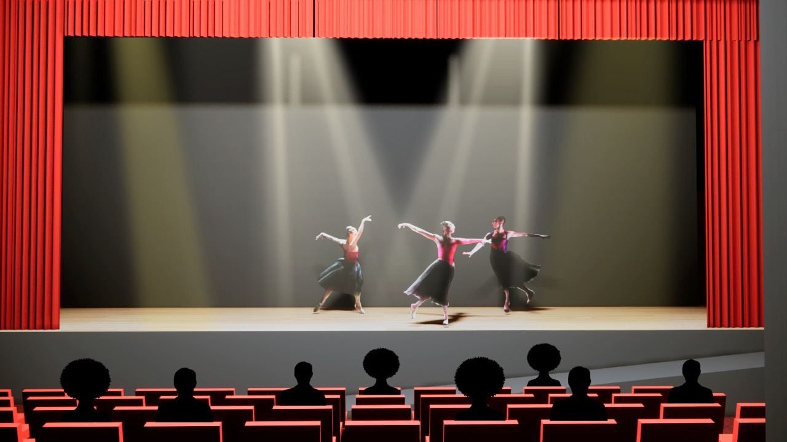

ESPAÇOS
ARENA FERNADNO CRUZ
a arena fernando cruz fica localizada na parte externa do espaço, ela tem arquibancada para o público que acompanha uma marquise,
a arena foi projetada para receber arte de rua princialmente, e leva o nome de fernando cruz diretor de teatro do grupo maracangaia
que faz intervenção e teatro de rua.

PALCO ANDERSON BARÃO
o palco anderson barão fica localizado no espaço central, é um palco baixo estreito mas comprido,
na sua lateral se tem arquibancada e na sua frente messas de refeições e um lounge para as pessoas assistirem, ele pode receber diversos tipos de artes,
mas leva o nome de anderson barão que foi radialista, apresentar e comediante, infelizmente anderson faleceu em 2022.

PALCO DELINHA
o palco delinha fica localizado no pavimento superior, proximo ao restaurante, é um palco pequeno tendo assim como principais atividades a música e o stand up
já que não demandam de muito espaço. o palco leva o nome da cantora delinha uma das maiores vozes sertanejas do estado. Delinha infelizmente faleceu em 2022.

PALCO TETÊ ESPÍNDOLA
o palco tetÊ ESPÍNDOLA FICA VOLTADO PARA A RUA, DISPOSTO EM CIMA DA MARQUISE DA ENTRADA PRINCIPAL, ESTE PALCO TEM UM CARÁCTER DE APRESENTAÇÕES EM EVENTOS
PONTUAIS, COMO CORAL DE NATAL..ETC, LEVA O NOME DA CANTORA, COMPOSITORA E MULTI-INSTRUMENTISTA TETÊ ESPÍNDOLA, QUE NASCEU EM 1954 NA CIDADE MORENA.

TEATRO MARLY MARLEY
o teatro marly marley fica no pavimento superior é considerado o principal espaço para apresentações artísticas. O TEATRO TEM 190 LUGARES,
UM GRANDE PALCO COM COXIAS E CAMARIM. O ESTILO DESTE TEATRO É FRÂNCES. LEVA O NOME DA ATRIZ E DIRETORA MARLY MARLEY, nascida em três lagoas, FEZ DIVERSOS FILMES E
TRABALHOU NA TV. faleceu em 2014 aos 75 anos.
